Real mornings,
step by step.
Ten scenarios from the films. Each step shows the exact words to type, what Sales Mama does and what you approve. Press a time to watch that moment.
Day one: install and set up.
A new rep, a new laptop, a Monday. Clone, 213 checks, “Set me up for Sales Mama”, and her own Today page. Installed and checked in minutes.
Where do I start?
Monday, 8:40 am. 17 accounts, 2 follow-ups overdue and a meeting at 3 pm. Plan the morning in minutes.
-
STEP 1
See your day
Open Today: your next meeting with a countdown, the send window, and the accounts to act on today.
Follow-ups due, an account at risk, a brief to read. Each with one button.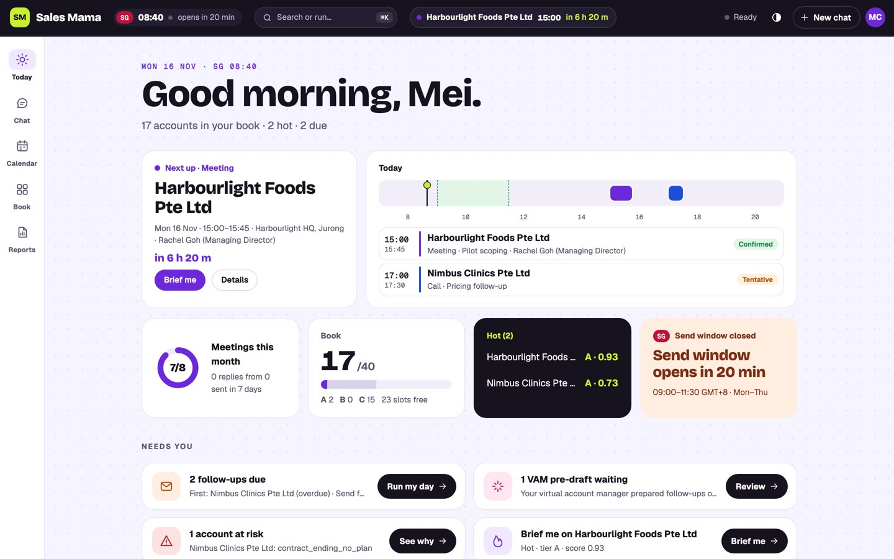
-
STEP 2
Let Mama do the legwork
Run my dayOne sentence. Sales Mama checks replies, refreshes every account and drafts what's due, with agents in parallel.
SMStart with the 3 pm meeting. Approve the Nimbus follow-up before the window opens.
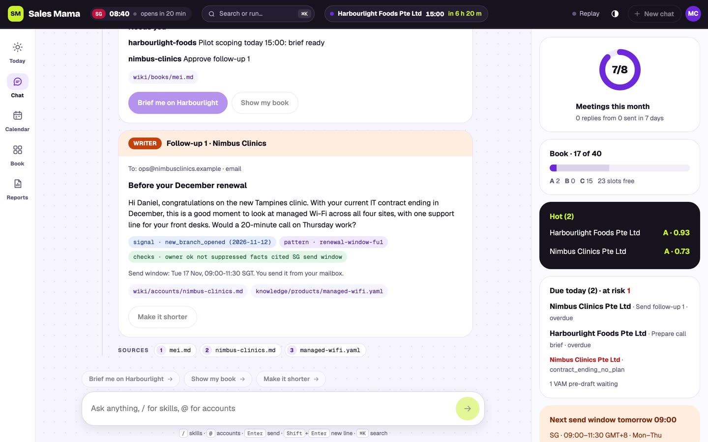
-
STEP 3
Know who needs you
Why is Nimbus at risk?Ask about any account in plain English.
SMTheir IT contract ends on 31 December and there's no plan yet. Send follow-up 1 today and mention the December contract end.

-
STEP 4
Walk in prepared
Brief me on Harbourlight FoodsA one-page brief before every meeting, built from the account page: the new contract, the second kitchen, the objection she raised.
SMShe said they already have a provider. Ask what they'd change.

-
STEP 5
Send at the right time
Send my draftsEvery draft is checked before anything goes out: unsubscribes, sources and the send window. The draft without a contact is held.
Reply “send 1” and it goes at 9:05, inside the Singapore window.
You approve
The difference by 9 am.
Before
- An hour sorting the inbox
- Walking into 3 pm cold
- A follow-up that slips a week
With Sales Mama
- A plan before the send window opens
- A brief ready for 3 pm
- The follow-up approved and sent at 9
Chasing the wrong leads
A list of names, no reason to call, and some don't exist. Find buyers who are actually ready.
-
STEP 1
Wake up to reasons to call
What changed overnight?Every night Sales Mama reads news, tenders and company registries in SG, MY and IN.
64 updates scanned overnight. 21 matched to accounts. 5 new leads found.Harbourlight and Nimbus rose to the top. Everything else is quiet.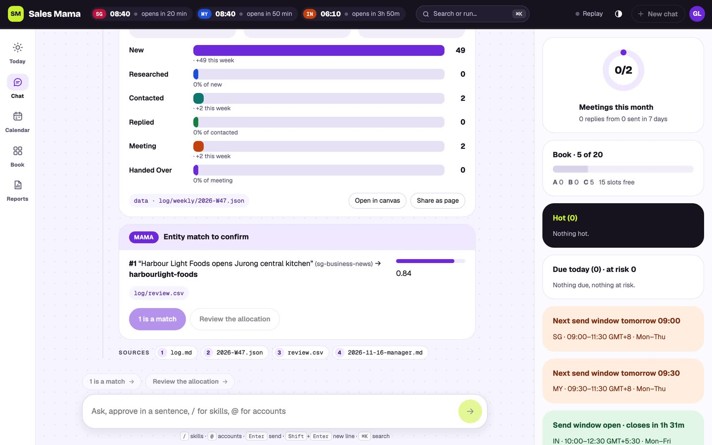
-
STEP 2
See why a lead is hot
Why is Harbourlight hot?Every score comes with its reasons, and every reason links its source.
SMA new school-canteen contract and a second kitchen in Tampines. Click to read the tender notice or the company's own announcement.
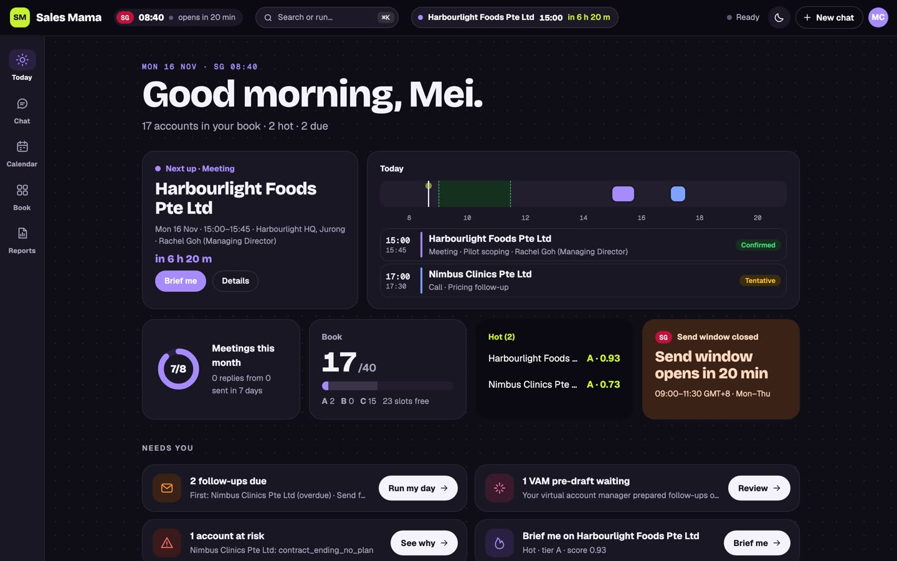
-
STEP 3
Check it's a real business
/company-check 197200078RType a UEN or a name. Sales Mama checks the official registry, then identity, people and risk in parallel on the open web.
Live with ACRA, filing on time, a real office, more than 3 staff.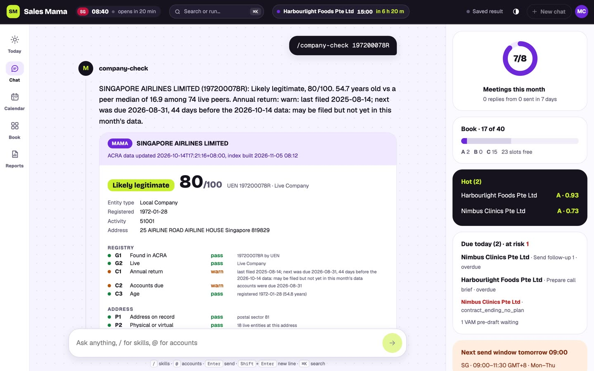
-
STEP 4
Find more like your best customers
How many clinics are there in Singapore, and how healthy are they?Ask about a whole market and get the numbers from the official registry.
9,618 live clinics in Singapore, with filing health and growth by year.About one in six uses a shared or virtual address: check those before calling.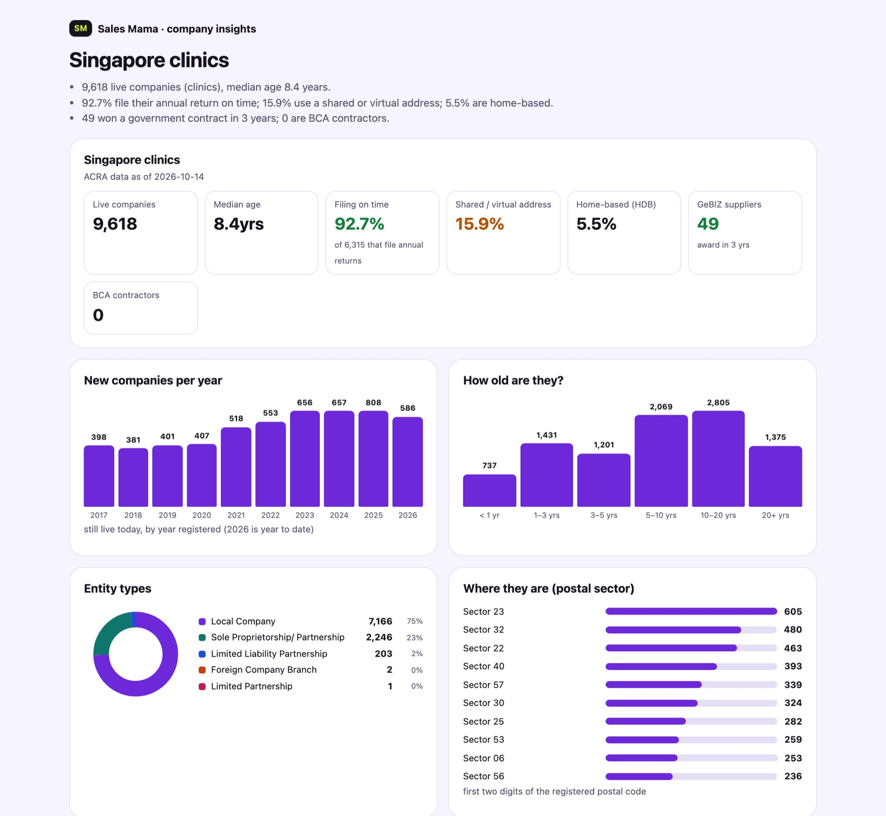
-
STEP 5
Claim the right ones
Get me more accountsYour manager assigns the best leads. You can claim more from the pool when you have room: 23 free slots, tier C open to claim, A and B from your manager.
“Claim 1 and 2” and they're yours for 30 days.
You approve
From cold lists to ready buyers.
Before
- Calling names from a cold list
- Pitching companies that closed
- Guessing who's hot
With Sales Mama
- A reason to call, with a source
- Every company checked first
- Hot accounts at the top every morning
Outreach that gets replies
“Dear Sir/Madam”, sent at 11:48 pm, gets ignored. Buyers answer at the right moment, from someone who did the homework.
-
STEP 1
Find the right person
/mama-research nimbus-clinicsSales Mama researches the account and saves every fact with its source.
The right person, and the reason: the IT contract ends on 31 December. -
STEP 2
Know what to offer
What should I offer Nimbus?Sales Mama recommends only your own products, and shows why.
Contract endingTime to review supportIT CareSM“Before your contract ends, let's make sure all three clinics have one helpdesk.”
-
STEP 3
Write about them, not you
Draft follow-up 1 for NimbusA draft that opens with their reason to talk, in your voice. Only facts from the account page. No invented claims.
Not unsubscribed, facts cited, inside the Singapore send window.
-
STEP 4
Right channel, right hour
Draft the proposal follow-up for Seri Kasih on WhatsAppWhatsApp only for contacts who opted in, and only inside each market's window. Each market's time zone, holidays and channels are applied for you.
Farid opted in for business messages. It goes out between 09:30 and 11:30 MYT.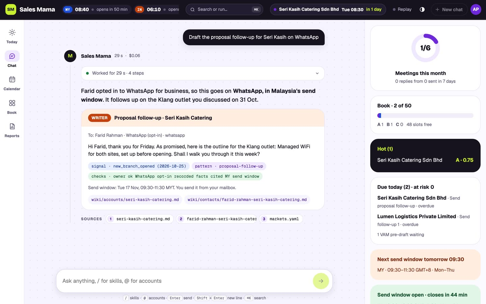
-
STEP 5
Catch every reply
Check my repliesReplies are read and sorted: interested, meeting request, not now, unsubscribe. Unsubscribes are honoured at once.
SMDaniel wants a call. Shall I book Thursday 10:00?
One click books Thursday 10:00.
You approve
Messages that get answers.
Before
- One template for everyone
- Sent whenever, in any time zone
- Replies lost in the inbox
With Sales Mama
- Every message opens with their reason
- Sent in each market's window
- Replies sorted, meetings booked
Meetings that never slip
“Thursday works for me.” Nobody booked it. Two meetings at 10:30. A renewal date passed. Deals die between meetings.
-
STEP 1
Turn a reply into a meeting
Book Nimbus Thursday 10:00 with DanielSales Mama checks clashes, holidays and working hours first, then asks you.
The meeting lands on your calendar and in the account's history.Free slot, no clash, no holiday, inside working hours. You say yes.
You approve
-
STEP 2
See your whole week
What's on this week?Meetings, follow-ups, renewal windows and holidays together.
Tuesday's demo overlaps the Quayside site visit. You see it now, not at 10:30.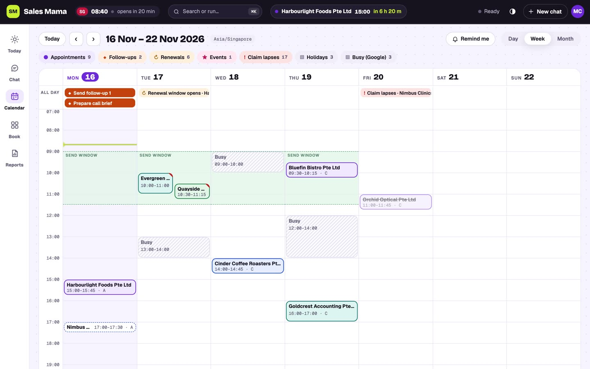
-
STEP 3
Fix clashes in one line
Move the Quayside visit to Tuesday 14:00Or drag it on the calendar. Sales Mama checks the new slot for clashes and holidays before it moves.
Drop it on a new slot, confirm, done.
You approve
-
STEP 4
Never miss a renewal
Renewal windows show up before they lapse. Google Calendar adds your busy times only: start and end, no titles, no attendees.
SMHarbourlight's renewal window opens Tuesday. Brief me, or book the call.
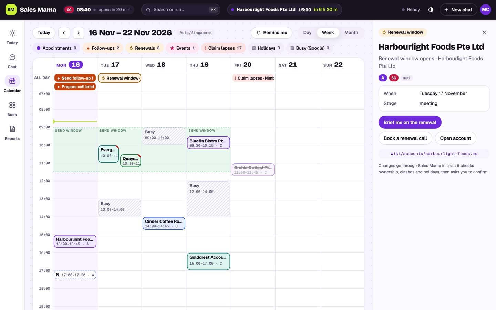
-
STEP 5
Log it in one line
/mama-handover harbourlight-foods: pilot agreed, start with Tampines in JanuaryAfter the meeting, one sentence updates the account, the calendar and your CRM row.
Meeting marked held. Proposal review already on the calendar for 24 Nov.No retyping notes at 6 pm.
Every deal keeps moving.
Before
- Replies that never became meetings
- Clashes found too late
- Renewals noticed after the date
With Sales Mama
- A reply becomes a booked meeting
- Clashes flagged before you commit
- Renewals and follow-ups on your calendar
Lead the team
Friday, 5 pm. Who's overloaded? Who got the good leads? What's working? See the whole team before 9 am.
-
STEP 1
One view every morning
Morning cockpitLast night's results, the team's numbers and anything that needs your decision.
“1 is a match” confirms a news story belongs to Harbourlight Foods.
You approve
-
STEP 2
Hand out leads fairly
/mama-allocateA proposal based on score, free capacity, market and each rep's track record. Capacity, territory and suppression rules hold on every row.
Who gets what, and why. Nothing is assigned until you approve.
You approve
-
STEP 3
See the team's week
Load per day, and double bookings in red before a customer notices. Live send windows for Singapore, Malaysia and India.

-
STEP 4
Coach from what works
/mama-weeklyThe weekly review: funnel, reply rates and which rep converts which industry. Tier A should meet at least twice as often as tier C.
Coach with numbers, not guesswork.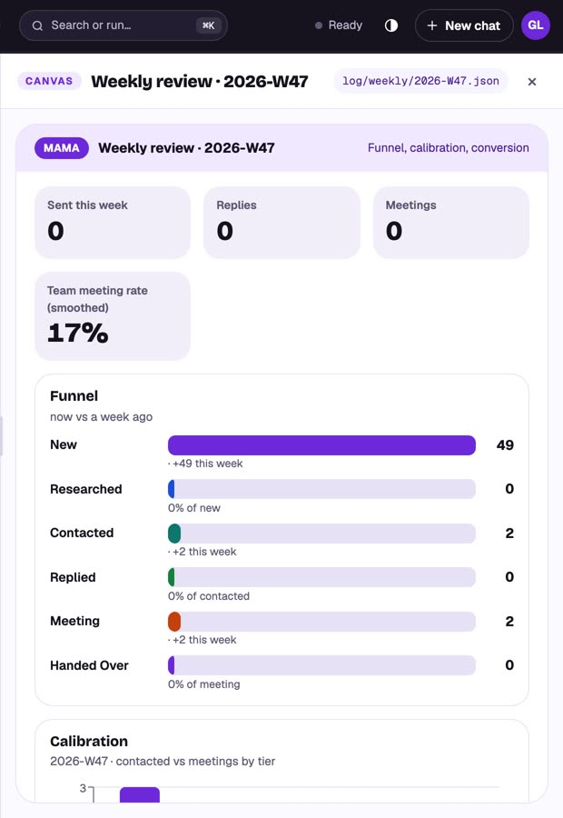
-
STEP 5
Share it in one click
Weekly reviews, allocations, company checks and insights, in one place. Open one in the canvas or share it as a page.
Send the weekly review to the founder in one click.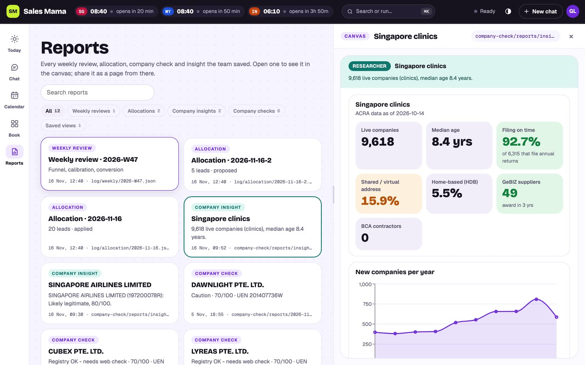
A team you can see.
Before
- Leads handed out by gut feel
- Overloaded reps, idle leads
- Reports built by hand on Friday
With Sales Mama
- Every assignment explained and approved
- Every rep's week at a glance
- The weekly review, ready to share
Is this company real?
Know a company is real before you spend a minute selling to it. One command, 18 checks, a verdict with every reason.
-
STEP 1
Ask
/company-check 197200078RIn chat or from the chip in the console, with a UEN or a name. Ambiguous names show candidates.
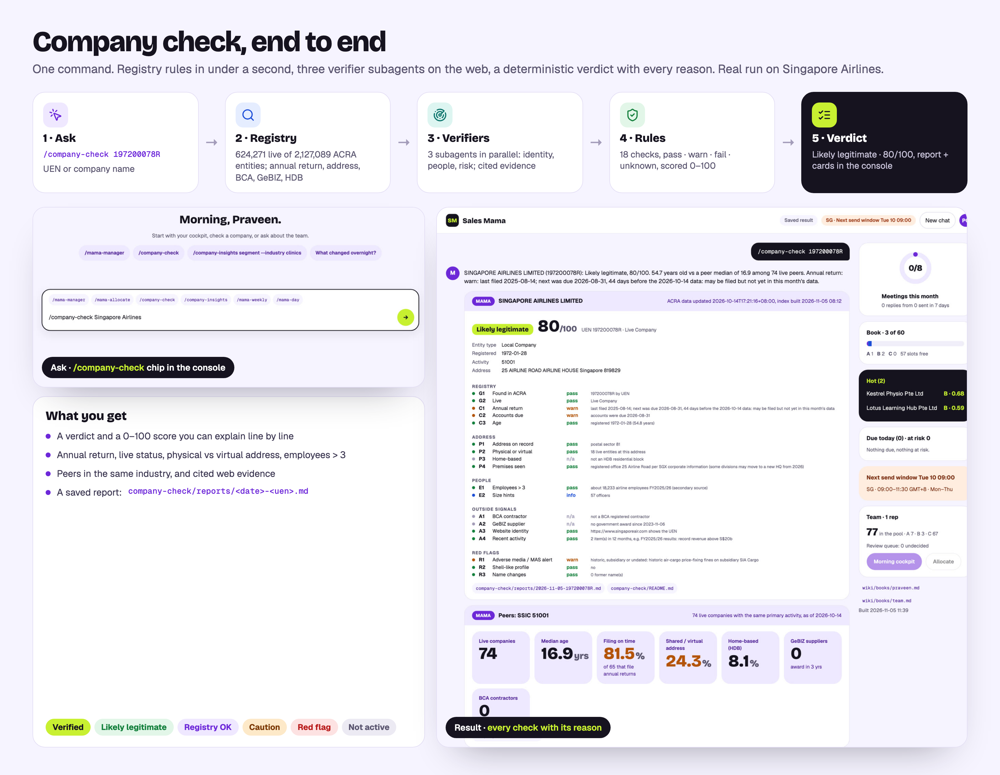
-
STEP 2
Registry
A local copy of ACRA, BCA, GeBIZ and HDB open data answers the registry rules in under a second: 2,127,089 entities, 624,271 live, refreshed monthly.
ACRABCAGeBIZHDB -
STEP 3
Verifiers
Three verifier subagents search the open web in parallel for identity, people and risk, and save cited evidence.
IdentityPeopleRisk -
STEP 4
Rules
18 deterministic checks, each pass, warn, fail or unknown with its reason, scored 0–100.
Live ACRA status Live Company or Live only Filing Annual return in the last 13 months Physical or virtual Own address vs a shared address (20+ companies) or home-based Size More than 3 employees, from evidence only Outside signals BCA contractor, GeBIZ supplier, website shows the UEN Red flags Adverse media, MAS alert, shell-like profile, name changes -
STEP 5
Verdict
A report in
company-check/reports/and visual cards in the console./company-check leadsturns the same data into a ranked list of new ICP leads.VerifiedLikely legitimateRegistry OKCautionRed flagNot active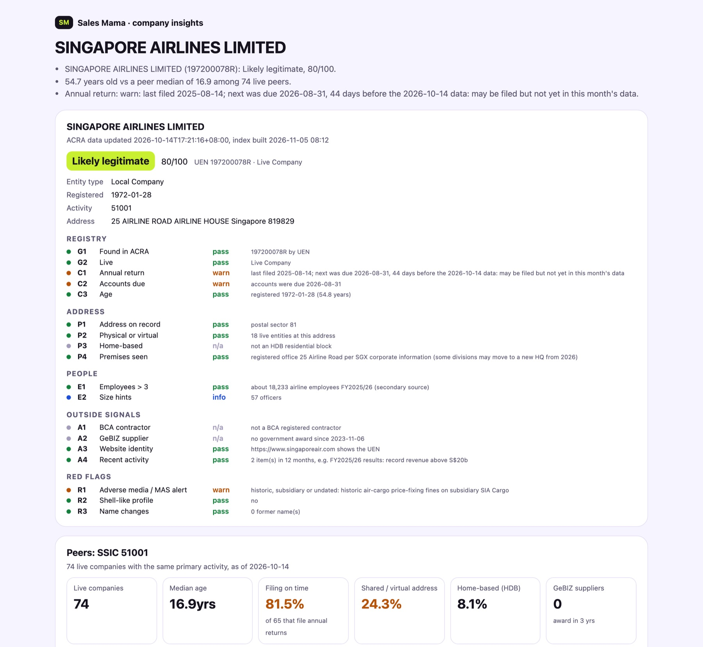
Size a market
Ask a question, get a report. Generated stats, charts and tables, live in the console or as a shareable page. Numbers come from scripts, never the model.
-
STEP 1
A segment
How many clinics are there in Singapore, and how healthy are they?Live count, filing on time, new companies per year, age bands, top activities and the best leads.
9,618 live · 92.7% filing on time. -
STEP 2
One company
Tell me about Singapore AirlinesA deep-dive: verdict, every check with its reason, peers and web evidence.
-
STEP 3
Your book
How clean is my book?The same checks across every account you own: who is live, filing on time, at a real address.

-
STEP 4
A comparison
Compare SIA, Singtel and DBSSide by side: status, age, filing, size signals and checks.
-
STEP 5
Share it
Open any report in the side canvas, or share it as a page.
Approve, then send
Nothing leaves without you. Every check is re-run at send time, and anything that changed after the preview is refused.
-
STEP 1
Draft
Draft follow-up 1 for Nimbus/mama-draftwrites the email or WhatsApp. Every name is checked against the account page; suppression is checked for the email and the domain.
-
STEP 2
Preview
Send my drafts/mama-sendpreviews the batch: full text, every check, READY or BLOCKED.send.py --preview[1] READY · email · harbourlight-foods Subject: Your Tampines kitchen [2] READY · whatsapp · lantern-lane-bakery [3] HELD · whatsapp · contact asked for after 20 Nov -
STEP 3
Pick and approve
send 1, 2You pick what goes, then approve the permission prompt. The console never shows that prompt, so sending stays in Claude Code chat.
Allow
Approvesend.py --send … --items 1,2? -
STEP 4
Sent and logged
Sales Mama sends through Gmail or the WhatsApp Business Cloud API and logs every touch in
log/touches.csvandlog/approvals.csv.[1] sent · gmail [2] sent · whatsapp -
STEP 5
What it refuses
Outside the send window, on holidays, to suppressed contacts, without WhatsApp opt-in, over quota, for the nightly runner, or if anything changed after the preview. Sending is off until the manager turns it on.
While you sleep
The nightly runner does the legwork under the manager's identity, then writes the morning brief. It never sends.
-
STEP 1
Scan
Scout subagents read the sources in
knowledge/sources.yaml: news, tenders, registries, events. Each finding is saved as a headline, link, date and a short summary inraw/signals/. -
STEP 2
Resolve
resolve.pylinks each signal to an account by registry ID, domain or name. 0.90 or more links; 0.70–0.90 goes to the manager's review queue. Never by guesswork. -
STEP 3
Score
score.pyrescores accounts with explainable parts and tiers A · B · C. Maths in scripts, not in the model. -
STEP 4
Watch every book
Virtual account managers set risk flags and the next best action, and pre-draft due follow-ups for the rep to approve. They never contact anyone or change owners.
-
STEP 5
Propose and brief
An allocation proposal for the pool, the manager's brief, lint and a git sync.
SMAllocation proposal ready: 12 leads across 3 reps. Approve in the morning cockpit.
The manager approves the allocation at 08:30.
You approve